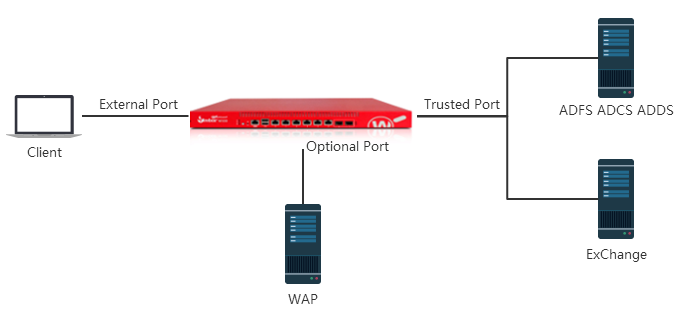
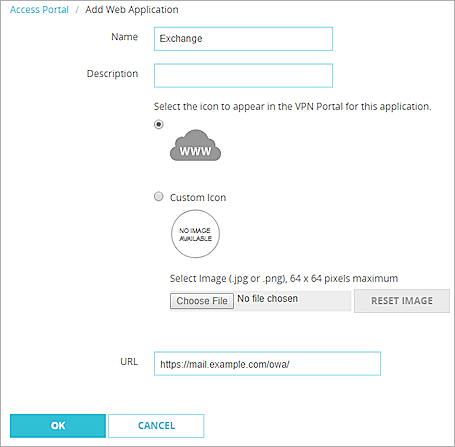
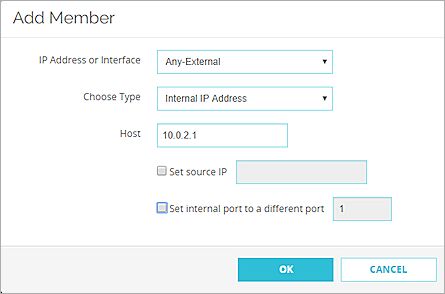
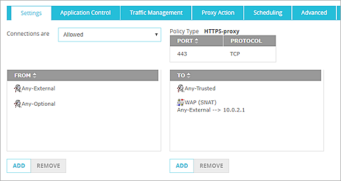
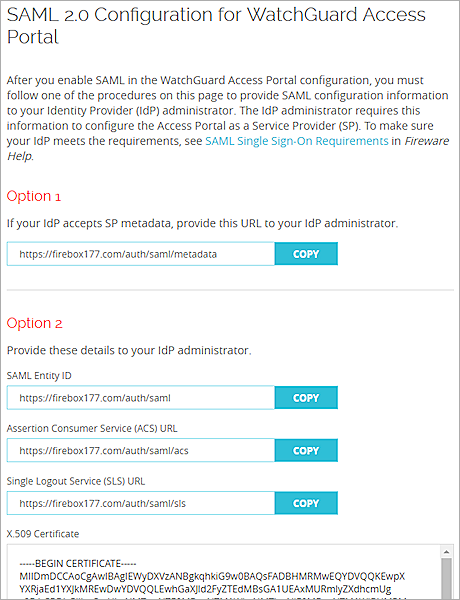
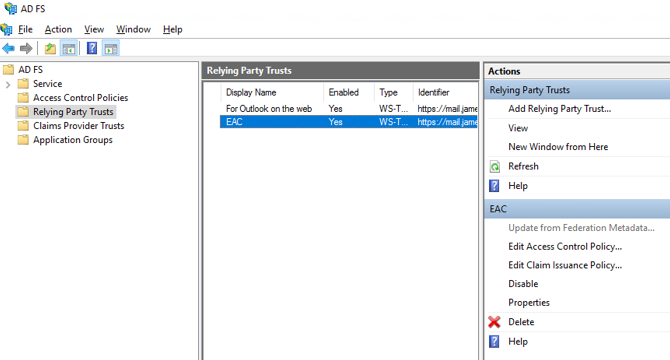
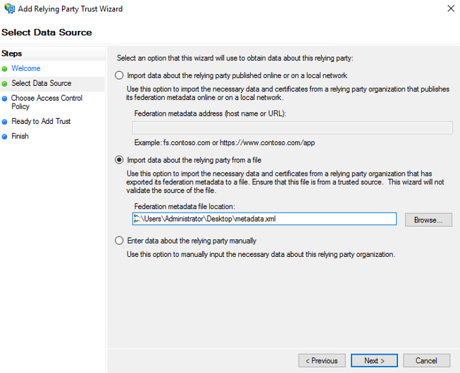
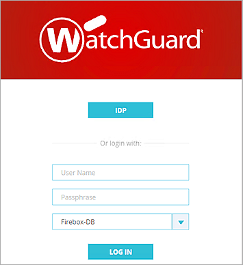
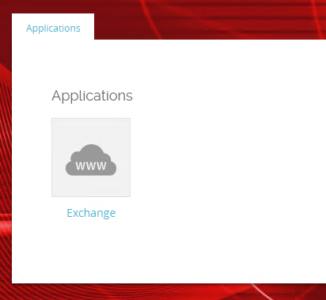

Deployment Overview
You can configure single sign-on (SSO) to use SAML authentication and enable your users to log in through one portal and get access to multiple services.
This document describes how to set up SAML authentication through the WatchGuard Access Portal with Microsoft Active Directory Federation Services (ADFS) as the Identity Provider. In this integration, we show how to enable SSO connections to Exchange through the Microsoft Web Application Proxy (WAP) for ADFS claims-based authentication to the Outlook web application on an Exchange server.
For more information about integration of ADFS with WAP and Outlook, see the Microsoft documentation for these products.
Integration Summary
Hardware and service versions:
- Microsoft Exchange 2019
- ADFS on Windows Server 2019
- WAP on Windows Server 2019
- WatchGuard Firebox:
- Fireware v12.7.2
- Feature key with an Access Portal license
Test Topology

This integration includes these components:
- Active Directory Federation Services (ADFS) Server — Provides claims-based authentication for single sign-on
- Web Application Proxy (WAP) — uses ADFS to perform pre-authentication for access to web applications, and also functions as an ADFS proxy
- Microsoft Exchange Server — uses ADFS claims-based authentication for client access to the Outlook web application
- Firebox — Hosts the Access Portal where clients authenticate for access to web applications
Configure the Firebox and Access Portal
The WatchGuard Access Portal is a subscription service. Before you can enable the Access Portal feature and configure it on your Firebox, you must make sure the Firebox feature key has an Access Portal license.
Enable the Access Portal and Add the Web Application
- Log in to Fireware Web UI.
- Select Subscription Services > Access Portal.
The Access Portal page appears with the Applications tab selected by default. - Select the Enable Access Portal check box.

- In the Applications tab, select Add > Web Application.
The Add Web Application page appears.

- In the Name text box, type the application name (Exchange).
- In the Description text box, type a description for this application.
- To upload a custom icon for this application, select Custom Icon (optional).
- In the URL text box, type the URL for the mail server login page. This is the URL published by the WAP.
- Click OK.
Configure the User Connection Settings
- Select the User Connection Settings tab.
- In the User Access settings, select All applications are available to all users and groups authenticated with the Access Portal.
Configure the SAML Service Provider Settings
- Select the SAML tab.
- Select the Enable SAML check box.
{kind=link}
- In the IdP Name text box type the name of your identity provider. This name appears on the Access Portal login page as the authentication server name.
- In the Host name text box, type an FQDN that resolves to the Firebox external interface.
- In the IdP Metadata URL, specify the connection settings. For ADFS, this URL should be like:
https:// DnsHostName of ADFS server/federationmetadata/2007-06/federationmetadata.xml - Leave the default value for other settings.
- Click Save.
Add a Static NAT Action
Add a static NAT action for connections to the WAP server.
- Select Firewall > SNAT.
- Click Add.
- In the Name text box, type WAP.
- In the Description text box, type a description (optional)
- Set the Type to Static NAT.
- In the SNAT Members list, click Add.
The Add Member dialog box appears.

- From the IP Address or Interface drop-down list, select Any-External.
In Fireware v12.2 or lower, the IP Address or Interface drop-down list is named External/Optional IP Address.
- From the Choose Type drop-down list, select Internal IP Address
- In the Host text box, specify the IP address of the WAP server on the private network.
- Click OK.
The SNAT member is added to the SNAT action.

- Click Save.
Add a Policy for Connections to the WAP Server
Add an HTTPS proxy policy for connections through the Firebox to the WAP server. This policy uses the SNAT action you created earlier.
- Select Firewall > Firewall Policies.
- Click Add Policy.
- In the Select a policy type settings, select Proxies.
- From the Proxies drop-down list, select HTTPS-proxy, and select the HTTPS-Client.Standard proxy action.

- Click Add Policy.
- In the From list, add Any-External and Any-Optional.
- In the To list, add Any-Trusted, and the WAP SNAT action that you added earlier.

- Leave the default value for the other policy settings. Click Save.
Get SAML Configuration Metadata
- Go to https://<host name>/auth/saml.

- In the Option 1 section, click Copy.
- Paste the URL into a browser and save the metadata on the web page to a XML file.
Import the ADFS Server Certificate to the Firebox
- Get the ADFS server CA certificate and the certificate issue to ADFS server host.
- Import those certificates to the Firebox. For more information see, see Manage Device Certificates in Fireware Help.
Configure ADFS
- Log in to ADFS manager.
- Navigate to Relying Party Trust.

- Click Add Relying Party Trust.
The Add Relying Party Trust Wizard starts. - On the Welcome to the Add Relying Party Trust Wizard page, select Claims aware.
- Click Start.
The Select Data Source step appears.

- Select Import data about the relying party from a file. Click Browse to select the metadata file you saved earlier. Click Next.
The Specify Display Name step appears.
- Specify a Display name. Click Next.
The Choose Access Control Policy step appears.

- From the access control policy list, select Permit everyone. Click Next.
- On the Ready to Add Trust page, click Next.
- Click Close to finish the wizard.
The new Relying Party Trust is added to the list.

- Select the Access Portal trust you added, and click Edit Claim Issuance Policy.
The Edit Claim Issuance Policy dialog box appears.

- Click Add Rule.
The Add Transform Claim Rule Wizard starts. - Create the rule Send LDAP attributes as Claims.
- Configure the rule with these settings:
- Attribute Store: Active Directory
- LDAP Attribute: User-Principal-Name
- Outgoing Claim type: UPN

- Add a second rule Transform an incoming claim.
- Configure the rule with these settings:
- Incoming claim type: UPN
- Outgoing claim type: Name ID
- Outgoing name ID format: UPN

- Click Apply and OK.
The two Issuance Transform Rules are now configured.

Test the Integration
After you have completed these configuration steps, you can log in to the Access Portal to test the integration.
- In a browser, go to https://<Firebox URL>.

- Click the button that matches the identity provider name you specified in the Access Portal SAML configuration. In our example, we the button is labeled as IDP.
The ADFS login page appears in the browser. - Type a Username and Password to authenticate with the AD server.
The Access Portal appears.

- Click the Exchange application and verify that the application successfully opens.